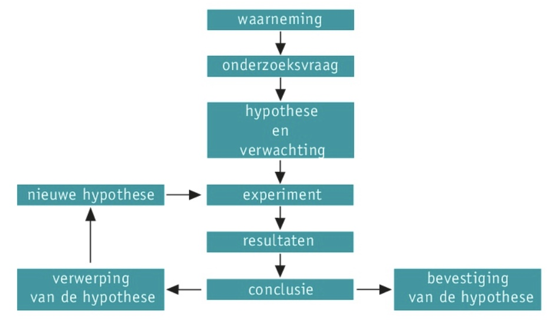
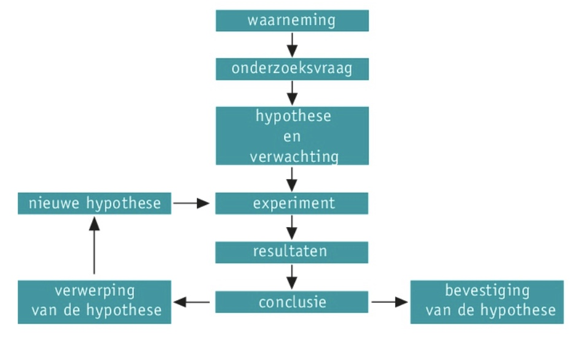

Je kunt verschillende typen en methoden van natuurwetenschappelijk onderzoek beschrijven.
Je kunt een werkplan maken voor het uitvoeren van een natuurwetenschappelijk onderzoek.
Je kunt verschillende typen en methoden van natuurwetenschappelijk onderzoek beschrijven.
Je kunt een werkplan maken voor het uitvoeren van een natuurwetenschappelijk onderzoek.
 Onderzoeken
Om antwoord te zoeken op een natuurwetenschappelijk probleem, moet je een onderzoeksvraag formuleren.
Beschrijvend onderzoek
- observeren
- data verzamelen
Hypothesetoetsend onderzoek
- methode bedenken om hypothese te toetsen
- experimenteergroep en controlegroep
- steekproef
Ontwerpend onderzoek
- maken van nieuwe dingen
- werken met modellen (modelleren)
Fasen van een natuurwetenschappelijk onderzoek
Waarneming - onderzoeksvraag - hypothese - experiment - resultaten - conclusie.
Theorieën
Verschillende samenhangende hypothesen kunnen leiden tot een theorie. Generatio spontanae = dieren ontstaan uit levenloze of dode stoffen. Elke theorie is geldig totdat het tegendeel wordt bewezen.
Werkplan
In een werkplan beschrijf je welk experiment je wilt uitvoeren, bestaat uit methode, materialen en resultaten. Dit alles verwerk je in een verslag.